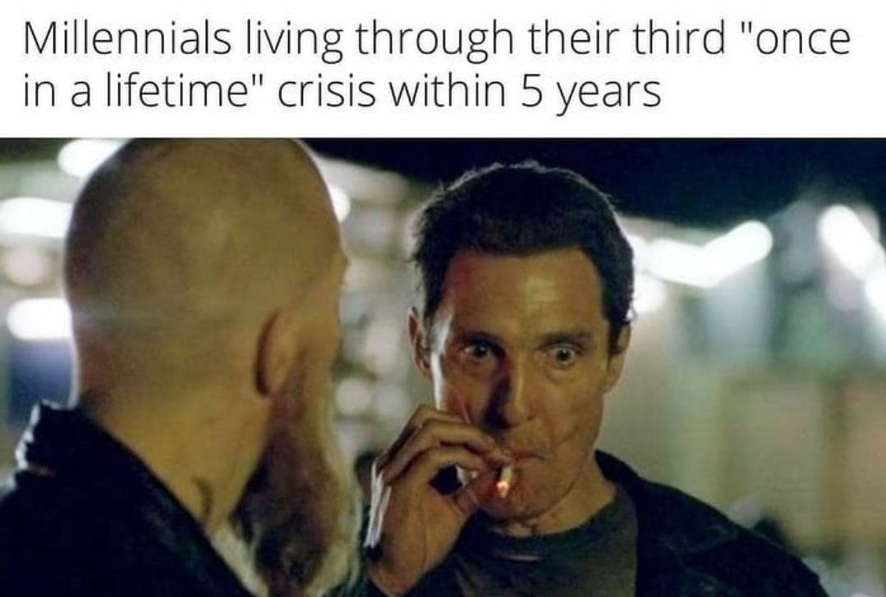

The random musings of a nightcrawler
A man; a fine man. A man dressed in PJs and a robe. Armed with a cup of coffee, boisterous thoughts and a heart stopping smile. A man out on what was supposed to be an evening walk; except, it's midnight and he's at the train station with a ticket out of town.
He pulls out his phone from his robe's right pocket, quickly glancing at the time as he unlocks it; 00:37. 8 mins to take off. Deft fingers, fired by muscle memory, weave around the app list, finding the music app. One fluid move sends a torrent of music from the sweet river playlist down the bluetooth earphones.
One click 'Home' sends him back to the home page on his cell were he's greeted with;
Zech 14:7 It shall be one day which is known to the LORD- neither day nor night. But at evening time it shall happen That it will be light
00:38
"...Every seed needs the water before it grows out of the ground...", the lyrics poured into him like water. He could definitely use some light and rain in his life, he thought as he flicked open the photo gallery.
'Telegram Images' album was his first selection
click the image to see the others
He chuckled at the hilarity of it as he scrolled on.
*****************************************************************
His mind wandered to love as he sat in the train. "What really does love mean?"
to be continued